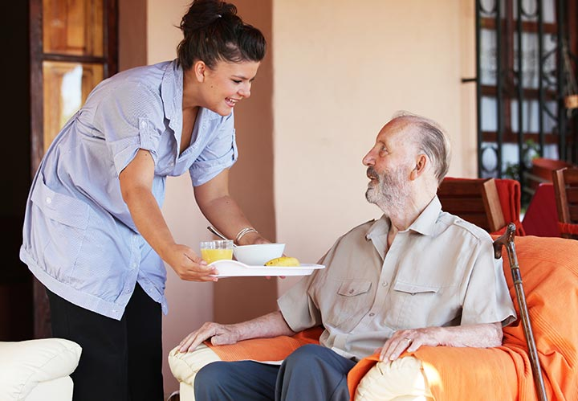
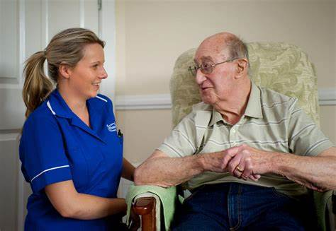

Services
Finding the right care shows that you care – but how do you ensure that you have found the right care provider and the right level of support?
At Focus Care Link, we are committed to putting people before profit. Our mission is to help our service users to enjoy the highest possible levels of comfort and health, treating them with dignity, respect and helping them to maintain their independence. We believe that every single person has the right to a good quality of life: we simply want to give them the support they need to continue to be their own person, giving them the choice and control to make decisions that affect their own lives.
Our approach to care involves tailoring our levels of support to the needs of the individual. Focus Care Link can provide anything from a few hours helping around the house to a full 24-7 around the clock care – including weekends and bank holidays. From domestic help to personal care, we offer our service users support in various ways to make them more comfortable.

Personal Care
For those who don't need around the clock live-in care, personal home care is the perfect way to provide the necessary personal support while allowing the service user to enjoy their independence. such as washing and bathing are personal and private to most, but are one of the key areas where support is needed. Our highly trained and sensitive carer workers are experienced in making service users feel relaxed and comfortable, and allowing them to maintain their dignity.
Live in Care
Live-in Care is a great alternative to a care home. It allows the client to stay in the comfort and privacy of their own home while enjoying an unrivalled level of 1-2-1 support, 24 hours a day.Combining personal care, housekeeping, and any other elements of support needed with the benefit of companionship, our live-in care service is tailored to the specific needs of the individual, while allowing them to live independently, retain their identity and maintain their mental well being and peace of mind by staying in their own home.
Domestic & Shopping Services
At Focus Care Link, we make every single care worker aware of all cultural and religious requirements that they need to adhere to when visiting clients. Values and traditions are important to every individual: why should this change when they start to receive care?... If English is a client's second language, we will provide language support where needed, placing carers with matching language skills with those clients. Our carers are also made aware of cultural requirements for day-to-day life, such as specific methods of food preparation or any dietary requirements. It is not just the day-to-day requirements that are important to us, however: if a client is marking a cultural celebration or festival, we happily help with clothing, preparing food or any other tasks that will make preparing for the occasion easier for our clients.
Cultural & Social Services
At Focus Care Link, we make every single care worker aware of all cultural and religious requirements that they need to adhere to when visiting clients. Values and traditions are important to every individual: why should this change when they start to receive care? If English is a client's second language, we will provide language support where needed, placing carers with matching language skills with those clients.... Our carers are also made aware of cultural requirements for day-to-day life, such as specific methods of food preparation or any dietary requirements. It is not just the day-to-day requirements that are important to us, however: if a client is marking a cultural celebration or festival, we happily help with clothing, preparing food or any other tasks that will make preparing for the occasion easier for our clients.

Older People
(Above or Under 65)
Available to those over the age of 65 (our oldest client -108!), our home care service for older people is second to none. From those who have become frail in their old age, to those with age-related illnesses, multiple care needs, or other issues, we are able to provide both simple and complex care.

Caring For People
(Under Mental Health Act)
People with mental illness are entitled to fair treatment, and they should: Be treated with respect and dignity Have their privacy protected Receive services appropriate for their age and culture Understand treatment options and alternatives.At Focus Care Link we provide services that doesn’t discriminate on the basis of age, gender, race, or type of illness.

Dementia
Our dementia care workers are chosen not only for their qualifications, but for their empathy and patience. Our dementia staff reassure clients and work with them to develop a regular daily routine, involving them in daily tasks where possible. While it is important for our care workers to help maintain their physical health, we also work to maintain the service user's mental health as far as possible.

Eating Disorders
Focus Care Link uses tailored, evidence-based treatment programs to help individuals stop unhealthy eating behaviors for good. We understand that each patient’s experiences are unique. Our personalized programs set a strong foundation for recovery,... regardless of where the patients are in their journey. We recognize the importance of a strong support system that guides and encourages patients throughout their road to recovery. Patients work with a handpicked multidisciplinary treatment team of board-certified eating disorder experts to create treatment plans unique to their individual needs.

Learning Disabilities
If a person with learning disability finds it difficult to live independently at home with the help of a family member or friend, we provide an option to move at our care homes. Here we support them with thier daily task ... and personal care tailored according to thier needs, preferences and goals. We also help them to develop thier skills which could be vocational, social, educational or skills that enable them to be more independent. We provide various care services depending upon the level of leaarning disabilities which can renage from moderate, severe or profound.
Mental Health Conditions
The term “mental health issues” can describe a wide range of conditions, from anxiety and depression to schizophrenia. Focus Care Link provides support to those with mild to moderate mental health problems. Our carers are highly trained in working with such conditions, providing regular home care services, reminders of regular medication and also companionship.

Disabilities
At Focus Care Link, we work with people with disabilities of all ages, and with a range of individual needs. Many people will find that juggling the care needs of a physically or mentally impaired relative with their personal and working lives tough. ... Our aim is to help both the client and their family members by providing a person centered level of care that is tailored to the individual, whatever their needs, with an emphisis on empowering the individual to take control of their lives. All of our care workers are trained to move and handle people safely and appropriately and will help to sign post clients to sources of information about appropriate equipment if needed.

Sensory Impairments
We have a wealth of experience in supporting people with sensory impairments, caring for those who are visually or hearing-impaired, or who suffer with dual sensory impairment. Our carer workers are trained to maximise the quality of life of those living with these conditions, assessing individual needs to provide the best possible support and to minimise social isolation.

Substance Misuse
Focus Care Link also provides services for those who have severe drug and alcohol related problems. We have specalized carers who support them with withdrawal and rehabilation. The aim is to help residents break free from thier addiction, make positiive changes to thier lives and continue to thier recovery. We support residents of diffrent ages and with wide range of need, in some cases a person may have a range of problems which contribute to or exacerbate substance misuse.
Palliative Care
Here at Focus Care Link we Provide End of life care which encompasses all care given to patients who are approaching the end of thier life and following death. End of Life care Enables the supportive and palliative care needs of both patients and family to be identified and met throughout the last phase of life and into bereavement. This includes management of pain and other symptoms and provision of psychological, spiritual and practical support.